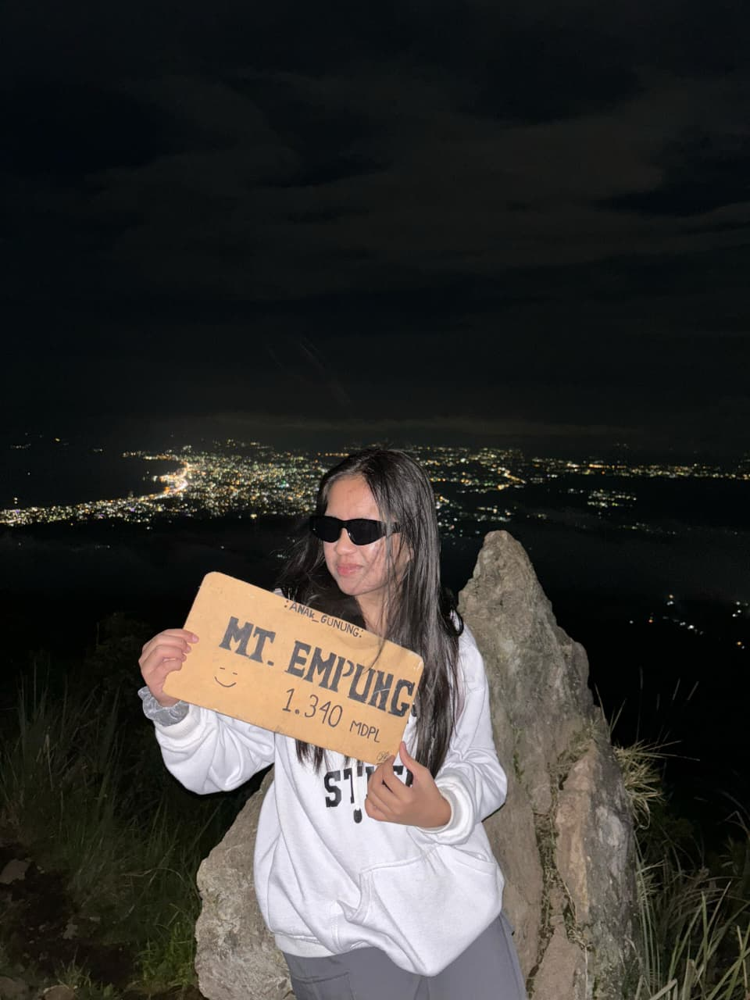
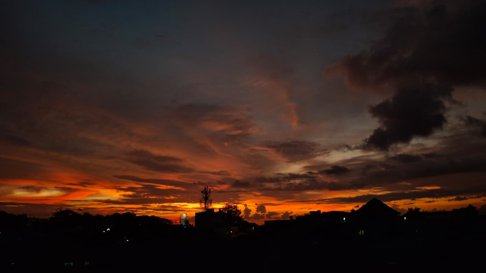

Tenang
Saya menyukai suara ombak dan cara laut bergerak, meskipun jujur saya takut dengan dalamnya. Aneh, tapi justru di situ saya merasa tenang.
|
Saya menyukai suara ombak dan cara laut bergerak, meskipun jujur saya takut dengan dalamnya. Aneh, tapi justru di situ saya merasa tenang.

Saya suka tempat seperti ini di mana semuanya terasa lebih tenang, dan saya bisa jadi diri sendiri.

Saya selalu suka sunset karena di situ saya belajar kalau sesuatu yang berakhir tetap bisa terlihat indah.